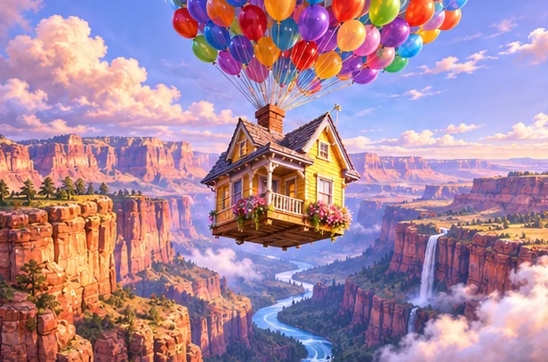
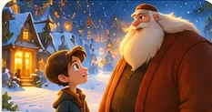
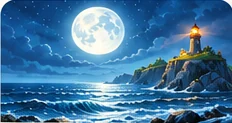

2009·США·96 хв·6+
Up
Старий піднімає дім на повітряних кульках, щоб виконати обіцянку дружині, — і отримує несподіваного онука. Перші десять хвилин — найчесніша розмова про втрату в мультиплікації.
Де шукатиsweet.tv або Megogoліцензія Disney · український дубляж
Питання після переглядуЧому Карл спочатку не хотів ні з ким говорити?
2017·США·105 хв·6+
Coco
Хлопчик потрапляє у світ померлих і дізнається правду про прапрадіда. Мʼяка, музична розмова про память і тих, кого вже немає.
Де шукатиsweet.tv або Megogoліцензія Disney · український дубляж
Питання після переглядуКого з нашої родини ти хочеш, щоб я тобі розповів?
2002·США·85 хв·6+
Lilo & Stitch
Дві сестри після смерті батьків і прибулець, який ламає все. «Охана означає сімʼя» — тут це не слоган, а вибір щодня.
Де шукатиsweet.tv або Megogoліцензія Disney · український дубляж
Питання після переглядуЩо робить людей сімʼєю?

1999·США·86 хв·7+
The Iron Giant
Хлопчик дружить із бойовим роботом і вчить його, що той не зброя. «Ти є тим, кого ти вибираєш» — і дуже сильний фінал.
Де шукатиПрокат: Megogo, Apple TVчасто лише з субтитрами
Питання після переглядуЧи може хтось змінитися, якщо його таким зробили?

2019·Іспанія·96 хв·7+
Klaus
Егоїстичний листоноша й самотній тесля з іграшками міняють місто, де всі ворогують. «Добрий вчинок завжди породжує інший» — тут це сюжетний механізм.
Де шукатиNetflixпрацює в Україні, український інтерфейс
Питання після переглядуЯкий добрий вчинок хтось зробив для тебе цього тижня?

2014·США·102 хв·7+
Big Hero 6
Хлопчик після смерті брата отримує робота-медика, який наполегливо питає: «Як ти оцінюєш свій біль?». Про помсту, яка не лікує.
Де шукатиsweet.tv або Megogoліцензія Disney · український дубляж
Питання після переглядуЧим Беймакс допомагав Хіро насправді?

2014·Ірландія·93 хв·7+
Song of the Sea
Брат і сестра після зникнення мами. Мальовано як ірландський орнамент, сказано про горе, яке не можна запечатати в камінь.
Де шукатиПрокат: Megogo, Apple TVчасто лише з субтитрами
Питання після переглядуЧому бабуся і тато поводилися так, ніби нічого не сталося?